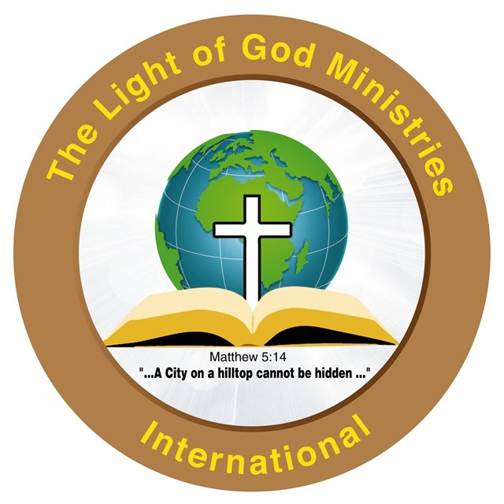
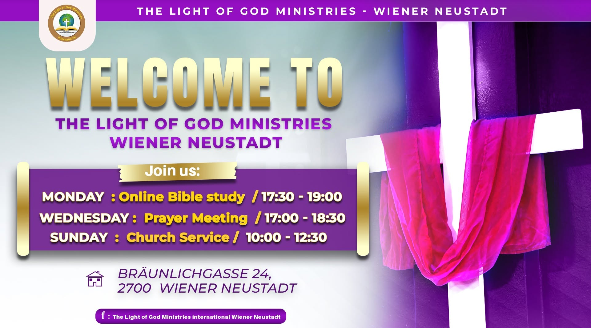

Online Bible Study
17:30 – 19:00
Study the Word together, from wherever you are.
Find the link on Facebook →
Light of God Wiener NeustadtEvangelical Gospel Church · Wiener Neustadt, Austria
“A city on a hilltop cannot be hidden.” Matthew 5:14
Everyone is welcome. Come as you are and meet God with us.

Join us
17:30 – 19:00
Study the Word together, from wherever you are.
Find the link on Facebook →17:00 – 18:30
Gather in prayer for our families, our city and the nations.
Bräunlichgasse 24 →10:00 – 12:30
Worship, the Word and fellowship. Our main gathering of the week.
Bräunlichgasse 24 →Who we are
The Light of God Ministries International is an evangelical gospel church in Wiener Neustadt. Our logo says it all: the cross at the centre, the open Bible beneath it, and the whole world in view.
“You are the light of the world. A city on a hilltop cannot be hidden.” Matthew 5:14
Visit us
Watch & listen
Can’t make it in person? Follow our services and messages online.
Visit our YouTube channelStay connected
The quickest way to reach us is through our social pages.